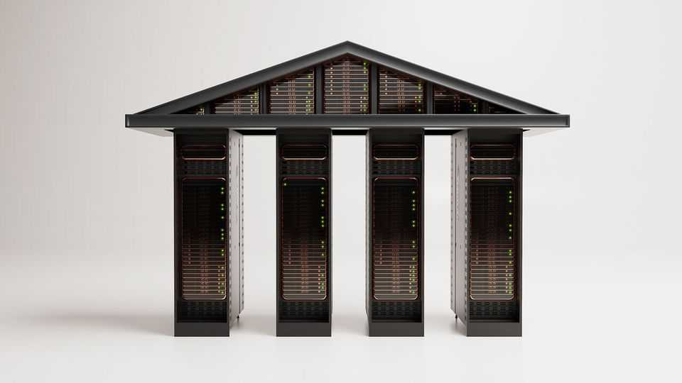
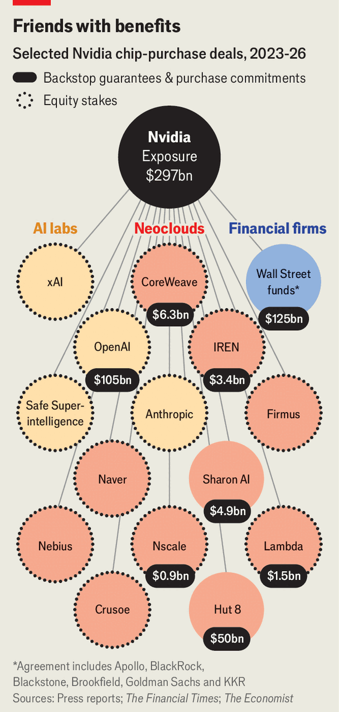

Nvidia is the central bank of AI
But will its loans prove sound?

Sep 3rd 2026
It took thirty years for Nvidia, an American firm whose chips power much of the world’s artificial intelligence, to reach a valuation of $1trn. Getting to $2trn took only nine more months. It passed the $5trn mark less than two years after that. It is now the world’s most valuable company, worth around $5.4trn. Next year its sales are expected almost to double. Some analysts predict it will take in $1trn in annual revenue by 2029.
It is not just chipmaking that has spurred Nvidia’s stunning growth, however. Its boss, Jensen Huang, has also resorted to financial engineering to boost demand for its wares. In mid-August, for example, Nvidia agreed to provide a backstop worth up to $105bn for a vast data centre in Ohio that will use lots of its chips. A week earlier it had revealed plans to mobilise more than $500bn of investment in AI infrastructure with the help of six big Wall Street firms, by guaranteeing the value of the equipment it sells to such projects. It may underwrite as much as a quarter of the cost of some investments. In July Nvidia helped some customers finance big data centres in another way, by promising to top up their income if it misses set targets.
Companies often lend to their customers: think of the financing arms of carmakers, for example. Mr Huang argues that Nvidia is simply helping to unlock investment for perfectly viable projects that might otherwise struggle to borrow enough at the right price. But to critics, these deals carry more than a whiff of the dotcom boom of the late 1990s, when telecom-equipment-makers such as Cisco and Lucent lent billions of dollars to telecoms providers that bought their gear. When demand for the telecom firms’ services fell short, some of them collapsed, landing Cisco and Lucent with big losses.
As Jay Goldberg of Seaport Research Partners, a firm of analysts, puts it, Nvidia is walking a fine line between “enabling demand” and “creating it”. He does not yet think Nvidia has crossed that line, although it is “getting pretty close”. Others are more sceptical still, including Michael Burry, an investor who made a fortune betting against the mortgage-backed securities that precipitated the financial crisis of 2007-09. He and others are asking what might happen if demand for AI chips grows more slowly than expected, supply increases and prices fall, which would not only reduce Nvidia’s own profits but potentially also generate losses on its lavish support for its customers.
The question is pertinent because Nvidia’s financial commitments are huge and growing fast. Over the past three years it has pledged over $70bn in investment in startups and offered $300bn in financial support to its customers. Some have taken to calling Nvidia the “central bank of AI”, because it plays so pivotal a role in financing the industry. That will indeed, as Mr Huang argues, help the industry grow—but it also carries risks.
Nvidia’s financial engineering is partly a response to its biggest customers’ transformation into rivals. “Hyperscalers”, tech giants such as Amazon, Google, Meta and Microsoft, account for roughly half of Nvidia’s revenue. This year they are projected to invest around $800bn, largely on AI infrastructure. But most of them have begun designing their own chips, which puts their future purchases from Nvidia in doubt.
For the hyperscalers, these custom chips are much cheaper, costing between a fifth and a third as much as Nvidia’s. They can also perform some tasks better, because the hyperscalers can tailor them to their own software. Worse, from Nvidia’s point of view, a few of the tech giants are not simply developing chips for their own use, but also marketing them to others. Google, for example, has sold some specialised processors to Anthropic, a big, free-standing AI lab. Amazon also expects its custom-chip business to become a sizeable source of revenue. Bloomberg Intelligence, a data provider, predicts that custom chips will gradually eat into Nvidia’s sales, accounting for about 50% of the market for processors used in AI by the end of the decade, up from roughly 40% this year.
Nvidia, therefore, must look elsewhere for growth. It is courting governments that want to build domestic AI infrastructure, companies constructing their own data centres and neoclouds (firms that rent out AI computing capacity). Such plans require huge upfront investments. A one-gigawatt facility, the kind used by large AI labs, contains around half a million chips. Bernstein, a research outfit, estimates that equipping one with Nvidia’s latest hardware costs around $47bn, two-fifths of which goes on the chips alone. Nvidia reportedly plans to raise the price of its latest processors by more than 15%, blaming the soaring cost of memory chips, an important component.
Hyperscalers have little trouble financing all this. They have typically used their prodigious cashflow to pay for new data centres. More recently, as their spending has soared, they have also begun to borrow heavily. Four of them have issued more than $200bn in debt in 2025 and 2026.
Hyperscalers have investment-grade credit ratings, which keep their borrowing costs low. Upstart neoclouds have similar spending needs, but little revenue. Their loans are naturally much more expensive. Alphabet, Google’s parent company, sold $2.75bn of 50-year bonds in November, at an annual interest rate of 5.7%. The rate at which CoreWeave, the biggest neocloud, borrowed $2.6bn in July was almost double.
It is this gap, between hyperscalers’ borrowing costs and everyone else’s, that the bank of Nvidia would like to narrow. One way it does that is by taking equity stakes in startups that will be customers themselves or that will help fuel demand for Nvidia’s chips indirectly. Last year Nvidia made about 90 such investments, nearly twice as many as two years earlier. This year it has already agreed another 60-odd.
Some of these cheques aim to propagate open-weight AI models, which users can download free of charge and adapt, unlike proprietary offerings from firms like Anthropic, OpenAI and Google, which users tend to access via subscriptions and whose inner workings are hidden. In August Nvidia agreed to pay Poolside, a startup building AI coding models, $6bn to license its software and a further $1bn for a stake. It has also agreed to buy Hugging Face, a platform hosting open-weight models, for $12.9bn. The intention behind such investments is to fuel demand for Nvidia’s chips by creating a proliferation of AI products and companies that are independent of the hyperscalers.
Increasingly, however, Nvidia is not simply investing in promising AI firms, but also helping them finance big projects more directly. In early July it announced a new stratagem in which it promises to top up neoclouds’ income from new data centres to an agreed floor. These undertakings, the exact terms of which vary from deal to deal, often last for six years. Throughout that period, Nvidia promises to pay a set price for “compute”, as the jargon has it. If the neocloud manages to sell the capacity in question at a higher price, Nvidia receives a share of the difference. This safety-net makes neoclouds’ future revenues much more predictable and so lowers the cost of the debt they take on to build new data centres. That, in turn, spurs demand for Nvidia’s processors.
Sharon AI, an Australian neocloud, expects to make use of a backstop of this sort worth about $4.9bn to deploy around 40,000 Nvidia chips. Firmus, another neocloud, plans to buy as many as 170,000. Dan Nishball, an analyst at SemiAnalysis, a consultancy, argues such arrangements need not be a permanent feature of the industry, but instead “buy time” for lenders to become more comfortable about lending to such projects.

In the meantime, the combination of these different forms of support is creating a complex tangle of commitments (see chart). Take CoreWeave, a neocloud in which Nvidia has accumulated an 11% stake for more than $2bn. CoreWeave hopes to build more than 5GW of data-centre capacity using Nvidia’s chips by 2030. Nvidia has agreed to spend up to $6.3bn on CoreWeave’s unused capacity by 2032, if need be. Nvidia is simultaneously CoreWeave’s investor, supplier and customer.
Nvidia is also taking a creative approach with big AI labs, which need huge amounts of compute but are bleeding cash. The giant data centre it is backing in Ohio is owned by SB Energy, a unit of SoftBank, a Japanese conglomerate. OpenAi will be the tenant. Nvidia, for its part, will provide guarantees for the lease on the land and buildings and for the power-purchase contract on which it will rely. In return, the project will use 1.5m Nvidia processors, with multiple “upgrade cycles” expected over the life of the project.
Even Anthropic, which buys chips from Amazon and Google, has not escaped this web. Through a convoluted series of agreements, it has reportedly signed a $35bn deal to rent cloud-computing capacity from Lambda, a neocloud in which Nvidia has a stake. Lambda, in turn, uses a facility being developed by Hut 8, another neocloud, whose entire capacity Nvidia had leased (and may now have largely sublet).
Nvidia is exploring creative ways to draw more outside capital into such projects. Its $500bn partnership with big Wall Street firms will court institutional investors such as sovereign-wealth funds, insurers and pension funds. These investors will finance independent vehicles that will buy Nvidia hardware, build infrastructure and sell compute. Nvidia will neither contribute any cash upfront for these deals nor take on any debt. In some cases, though, it will provide “residual-value support” of up to a quarter of the deal’s total price to cover shortfalls in the value of the hardware involved after a certain period. It will also provide technical support, giving lenders more confidence that the equipment they finance will be used well. Mr Huang frames this as a way to make compute “an investable asset class”.
Underpinning this web of obligations are two fundamental assumptions: that Nvidia’s chips will retain their value and that demand for compute will continue to grow at a rapid pace. Neither is assured.
Start with the chips. Mr Huang says they are “fungible” and durable, with software upgrades enhancing their usefulness for years after they are sold. They should be seen as bankable assets, he argues, that can serve as collateral for loans and guarantees. But how long an AI chip retains its value is a matter of debate. Mr Burry has argued that big cloud providers have inflated profits by depreciating them over five or six years rather than two or three.
So far Mr Huang has the better of the argument. Older chips are still in demand. In August CoreWeave announced a contract involving Nvidia’s A100 chips that runs into 2029. The A100 was launched in 2020 and Nvidia has since rolled out multiple newer models. There is evidence, too, that old chips retain their value. SemiAnalysis estimates that renting Nvidia’s H100, a workhorse of the AI industry, costs around $2.80 an hour on a one-year contract. That is only about a tenth less than when the chip launched in early 2023.
Yet both the longevity and value of such chips may simply be artefacts of scarcity. When compute is constrained, firms have no choice but to keep older chips humming. Many are using such chips for inference, meaning when an AI model responds to queries, a far less demanding task than training models, for which the newest hardware is used.
Nvidia itself releases spiffy new chips every year, with the explicit intention of superseding their predecessors. That leaves it in the odd position of arguing both that old chips should retain their value and that its new chips should supplant them. Finding a balance will be tricky.
The price of compute should fall as supply increases. Hyperscalers and even labs like OpenAI are rolling out purpose-built inference chips, since spending on inference has overtaken spending on training. Nvidia enjoys enviable gross margins, of around 75%, against roughly 55% at AMD, a smaller rival. Tim Davis, the founder of an AI hardware firm acquired by Qualcomm, a chip designer, believes that, as options proliferate, the economics of chipmaking will “start to compress”.
The biggest risk to chip prices is demand itself. As long as spending on AI keeps booming, Nvidia sells its chips, its customers fill their data centres and its various guarantees are seldom invoked. But if demand is not quite as expansive as markets expect, neoclouds and other AI providers could struggle to sell their capacity or turn a profit. That, in turn, could trigger Nvidia’s backstops, forcing it to buy unused compute, cover price shortfalls or pay for unwanted power. The same slowdown would also dent Nvidia’s sales and thus the cashflow available to meet those obligations. This scenario does not hinge on a collapse in demand; merely disappointing growth could conceivably spell trouble.
How much could Nvidia have to cough up? It has promised around $25bn in future equity investments. It owes around $33bn in debt. Its potential liabilities to customers amount to about $300bn, but only come into play in a downturn and so do not appear on its balance-sheet. These include the $105bn guarantee behind OpenAI’s data centre; as much as $125bn through the Wall Street partnership; and around $67bn in other backstops.

Nvidia will almost certainly not end up paying anything close to the full amount of its guarantees. Its commitments are spread over many years so could not come due all at once. Its proposed backstop for OpenAI’s data centre, for example, runs for 20 years, starting in 2028. If OpenAI stopped paying the lease, Nvidia could find another tenant, vastly diminishing its exposure.
What is more, Nvidia’s own finances are strong enough to weather these liabilities. Morgan Stanley, an investment bank, reckons Nvidia’s “all-in” debt will rise from $53bn early next year to $200bn by the beginning of 2029 as guarantees come into effect. But that is offset by a stash of cash and liquid securities currently worth $99bn, and a business that will generate about $200bn in cash this year. Only a cataclysmic downturn that caused all Nvidia’s guarantees to come due and its profits to evaporate almost entirely would imperil the company—as things stand.
The picture may change, however, if Nvidia’s commitments keep growing. Andy Li of CreditSights, a financial-research firm, worries that it will keep “pushing the pedal” until “something breaks”. SemiAnalysis estimates that Nvidia takes on roughly $5.9bn of guarantees for every 100 megawatts of data-centre capacity covered by its neocloud backstop programme. If it adds more such guarantees, SemiAnalysis reckons its exposure could reach $175bn by the end of 2028 from this initiative alone.
Nvidia is not alone in using ever more complex financial instruments to lubricate customer demand. AMD has offered to sell big stakes in itself to OpenAI and Meta in exchange for mammoth contracts to buy its chips. In April Google assembled a consortium of firms to help finance Anthropic’s purchase of $35bn of its chips. Broadcom, which develops the chips on Google’s behalf, agreed to cover any shortfall if Anthropic fails to pay.
Amid the race to lock in sales and loans, there is a danger that speculative projects that might otherwise struggle to find financing will get built. Should returns in the industry fall short or take longer to materialise than these convoluted deals assume, the result will be a profusion of expensive, idle chips. No company is more entangled in this web than Nvidia. Mr Huang believes that the AI infrastructure buildout is “at full steam”. But Nvidia’s investors should be aware that, the more of this boom they finance, the more of any bust they will have to bear. ■